Espeleólogos
Para registrar cavidades, paneles, posibles marcas y restos de pigmento durante exploraciones, revisiones de campo o trabajos de documentación.
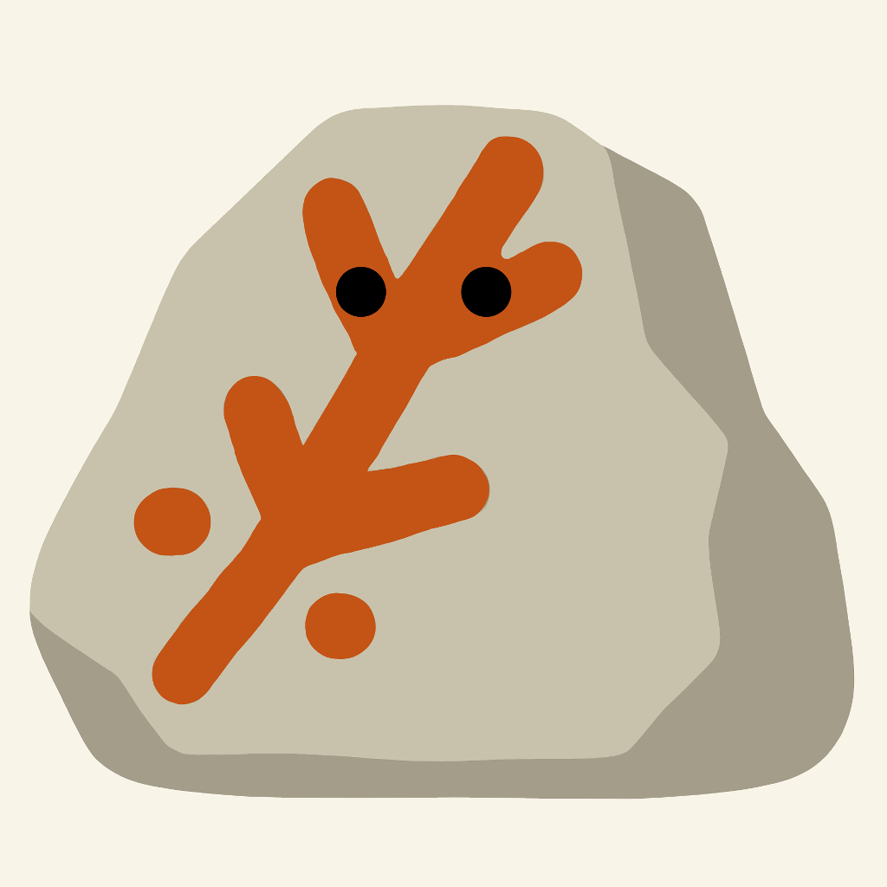
documentación visual rupestre
Rupestra transforma la fotografía de campo en una herramienta de análisis y documentación, ayudando a detectar y resaltar posibles pigmentos rupestres mediante análisis cromático avanzado y procesamiento digital de imagen.
Nacida desde un equipo multidisciplinar vinculado a la conservación de cavidades, combina experiencia en espeleología, arqueología, geología e ingeniería de software para apoyar la observación, el registro y la generación de informes en cuevas, abrigos y entornos rupestres.
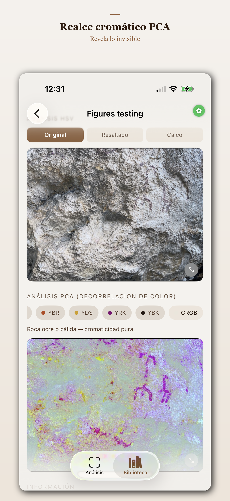
¿Qué es Rupestra?
Rupestra combina análisis cromático avanzado y procesamiento digital de imagen para ayudar a detectar, realzar y documentar posibles pigmentos rupestres directamente en campo.
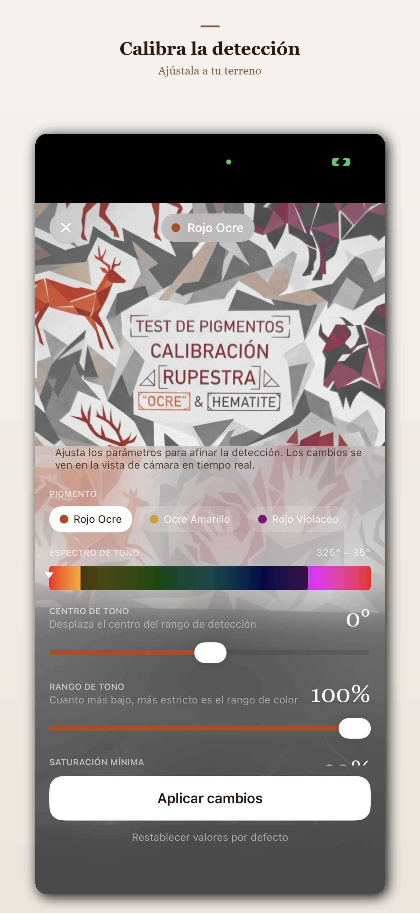
Para quién está pensada
Para registrar cavidades, paneles, posibles marcas y restos de pigmento durante exploraciones, revisiones de campo o trabajos de documentación.
Como herramienta de apoyo visual para observar, contrastar y preparar documentación gráfica de superficies rupestres.
Para generar informes visuales con imágenes de análisis, notas de campo, metadatos técnicos y localización del contexto.
Para apoyar tareas de observación, seguimiento y registro, siempre desde el respeto al patrimonio y sin sustituir el criterio experto.
Cómo funciona
Rupestra organiza el análisis en pasos claros para acompañar el trabajo real en cavidades: desde una primera observación visual hasta la generación de documentación técnica útil para el análisis posterior.
Fotografía la superficie en campo o selecciona una imagen existente para iniciar el análisis.
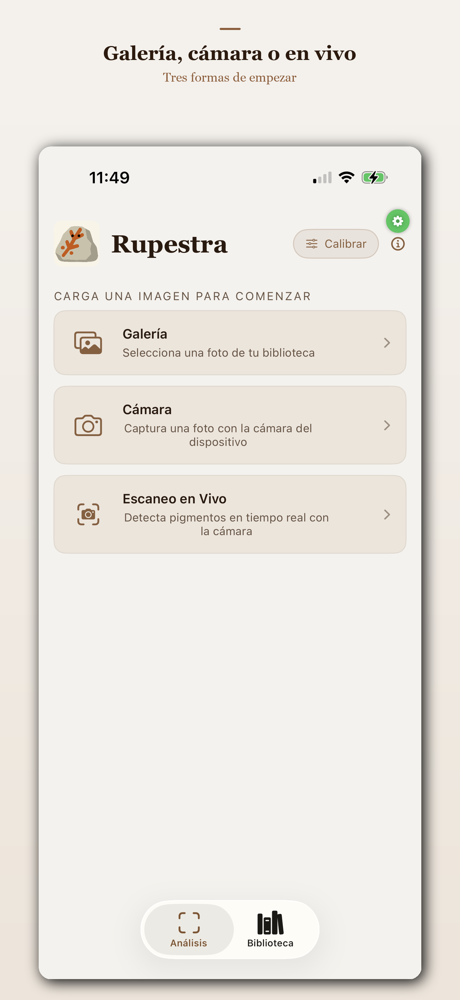
Elige entre pigmentos predefinidos o toma una muestra manual directamente sobre la imagen mediante el cuentagotas.
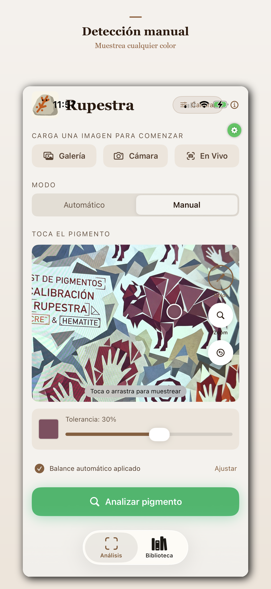
Corrige dominantes de color, calibra la detección o aplica realce cromático avanzado para observar trazos débiles o poco perceptibles.
Guarda imágenes comparables —original, resaltado, calco y realce cromático— junto con coordenadas GPS, metadatos de cámara y notas de campo en un informe técnico en PDF.
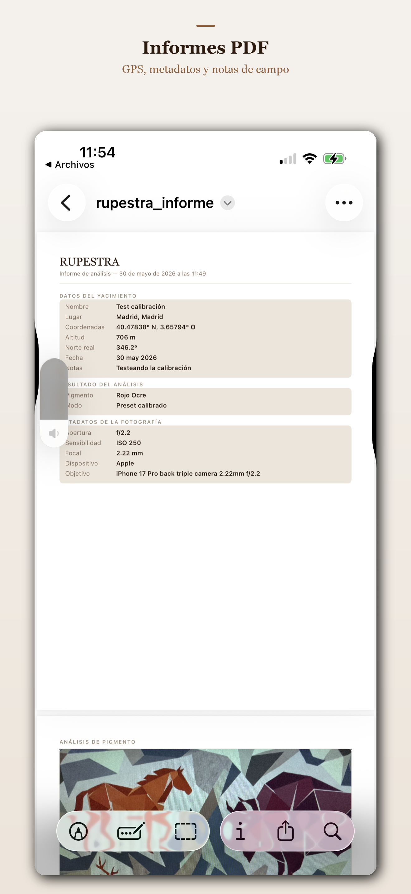
Organiza tus análisis por proyectos. Sincronización entre dispositivos con iCloud.
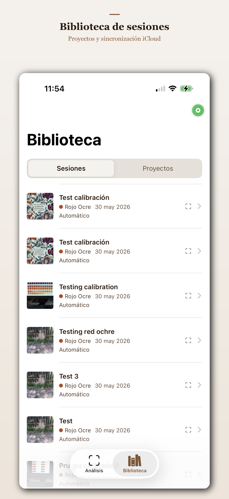
Ajusta los umbrales de tono, saturación y brillo para adaptar la detección a las condiciones de luz y al tipo de pigmento de cada superficie.
Modo diferencial
El modo En Vivo transforma el móvil en una herramienta de observación en tiempo real. Al mover la cámara sobre paredes, techos o superficies rupestres, Rupestra resalta las zonas compatibles con el pigmento seleccionado y neutraliza el resto de la imagen en una escala gris.
Así es posible recorrer visualmente una cavidad o abrigo antes de tomar la fotografía definitiva, detectando indicios, contrastes o zonas de interés que podrían pasar desapercibidas a simple vista.
Una forma rápida de decidir dónde observar con más detalle, qué fotografiar y qué documentar posteriormente.
Observación aumentada antes de la captura definitiva.
Por qué Rupestra
El proyecto surge de la experiencia directa en exploración, observación y documentación de superficies rocosas, dentro de un contexto de conservación de cavidades y trabajo de campo.
Las condiciones reales marcan el diseño de la app: poca luz, accesos complejos, superficies irregulares, necesidad de registrar contexto, revisar indicios con cuidado y generar documentación útil para su análisis posterior.
Rupestra está pensada para acompañar ese proceso: observar mejor, registrar con más precisión y facilitar la creación de informes claros, trazables y útiles para equipos de documentación.
Desarrollada en colaboración con equipos de campo de:
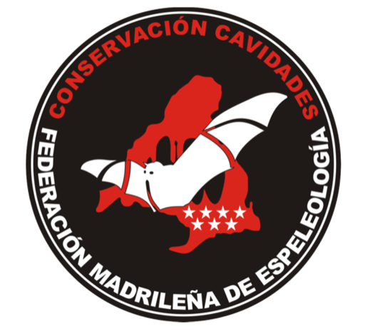
Galería

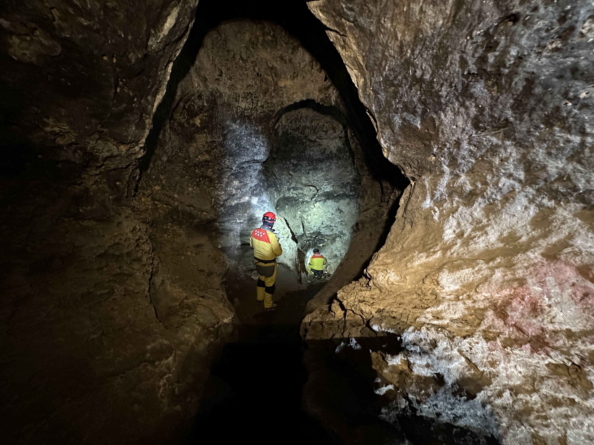
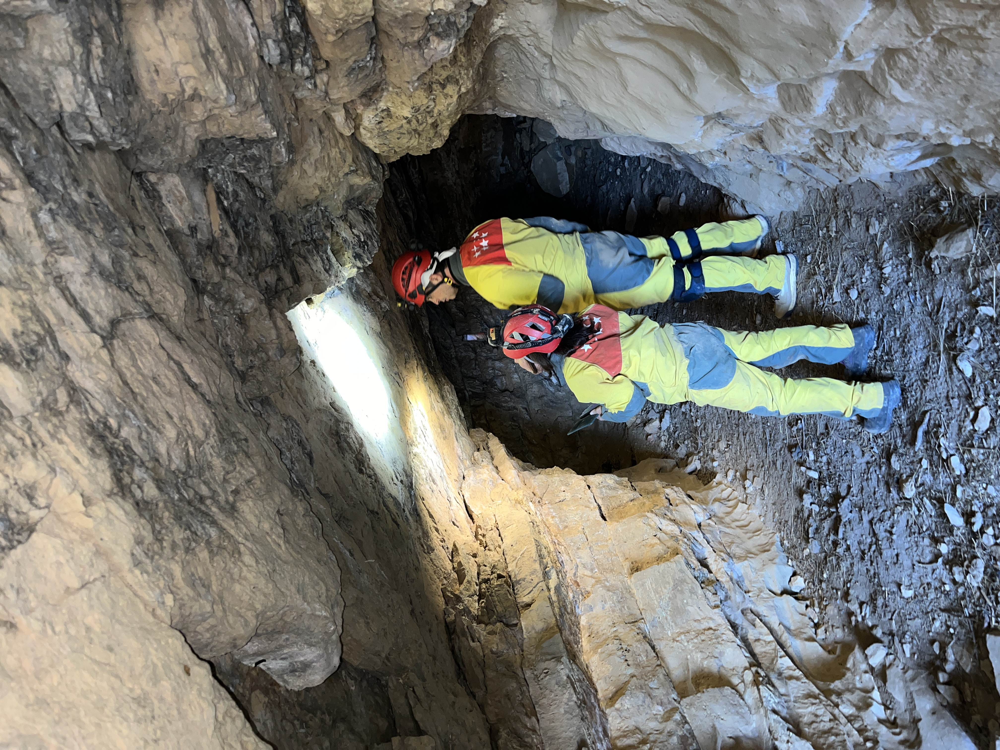
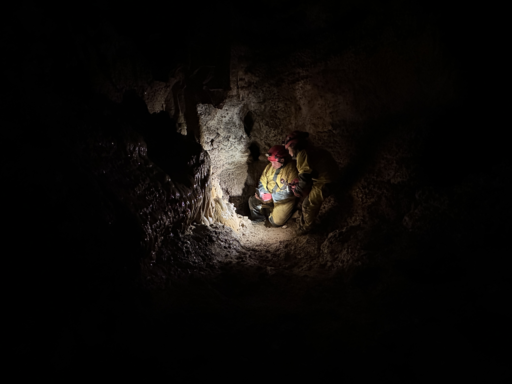
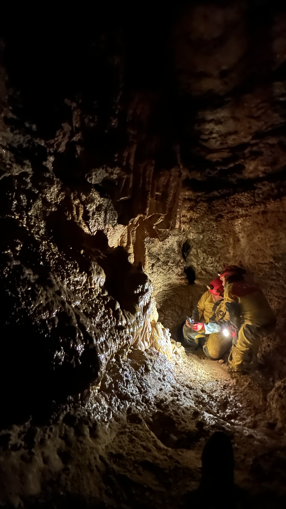


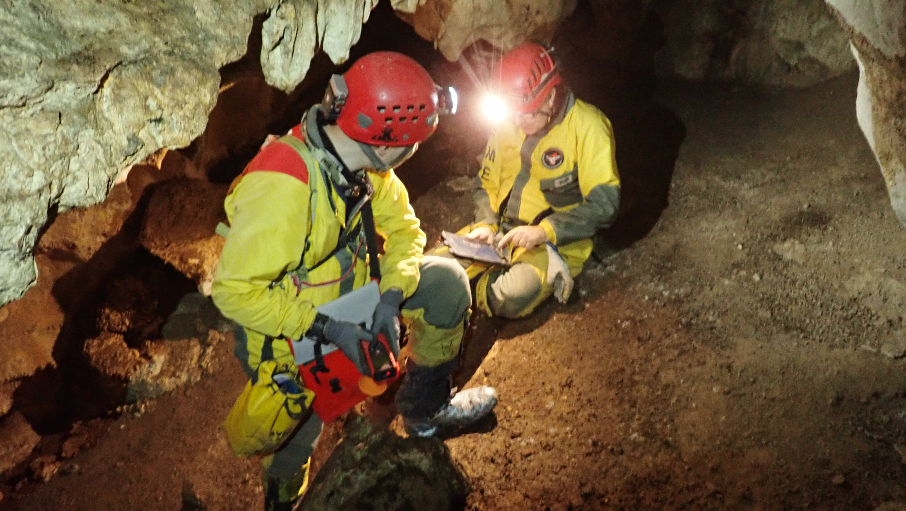


Agradecimientos
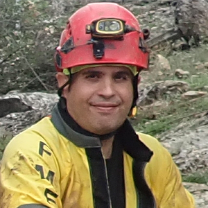
Rupestra ha ido tomando forma gracias a muchas conversaciones, pruebas en campo, comentarios y necesidades compartidas.
Gracias a los miembros de la Comisión de Conservación de Cavidades de la Comunidad de Madrid por su paciencia, sus ideas, su tiempo y su disposición a probar, cuestionar y mejorar cada parte del proyecto.
Este trabajo se apoya en una mirada colectiva: la experiencia de campo, el criterio técnico y el compromiso con la documentación y conservación del patrimonio subterráneo.